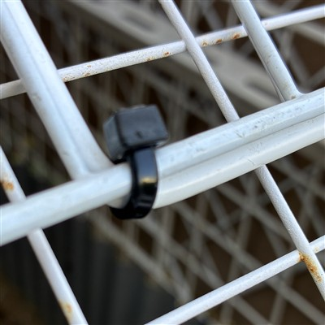
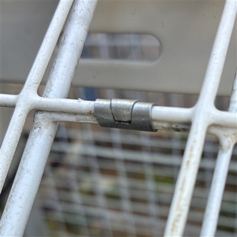
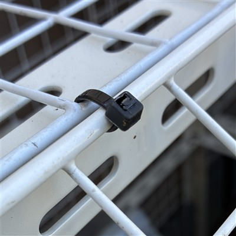
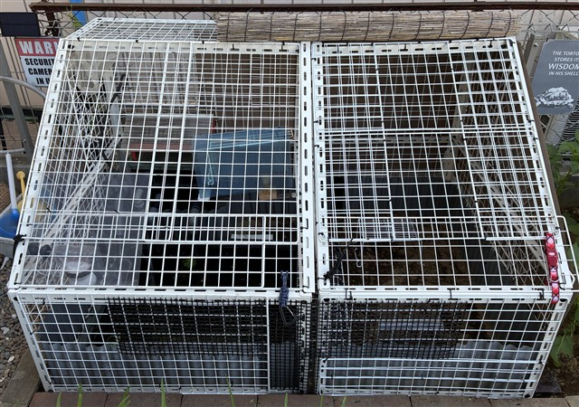
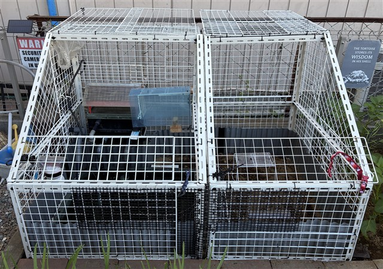
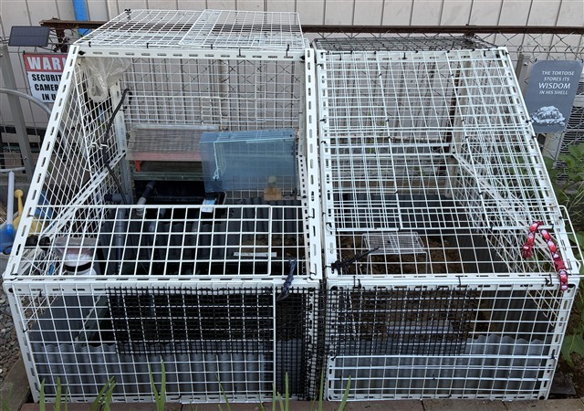

ケージ
当初はワイヤーネットどうしを結束バンドで固定する方法で第1世代ケージを製作していましたが、 複数回のアライグマ襲撃を受け、ついにはワイヤーネットの角を捻じ曲げた隙間から侵入されるに至り、 構造的な強度不足を解消する必要に迫られ、新たに第2世代ケージを製作しました。
準備したモノ
- アングル金具（ホームセンター） ← 棚受けに利用される断面L型の穴あき鋼材
- 大量のワイヤーネット（百均）
- 結束バンド（百均）
- あぜ波シート（ホームセンター）
- 樹脂ネット（網目12㎜角、ホームセンター切売り）
- 防草シート（ホームセンター）
- すだれ（百均）
製作
- アングル金具で骨組みを作る
- 壁面サイズに合わせて、ワイヤーネットどうしを結束バンドやワイヤー固定金具で結合し、壁面とする


- 骨組みの側面と天面に壁面を結束バンドで固定する
- 天面の開口部サイズに合わせて、ワイヤーネットどうしを結束バンドやワイヤー固定金具で結合し、天面ドアとする
曲げられないようにワイヤーネットを重ねて強度を確保する
- 天面ドアの一辺を結束バンドで固定する

- 側壁面下部内側にあぜ波シートを取り付ける
- 側壁面の猫が手を突っ込んで来そうな場所に樹脂ネットを取り付ける
- 日照ぐあいを調整するため、壁面の一部に防草シートを取り付ける
- すだれを取り付ける
全景


